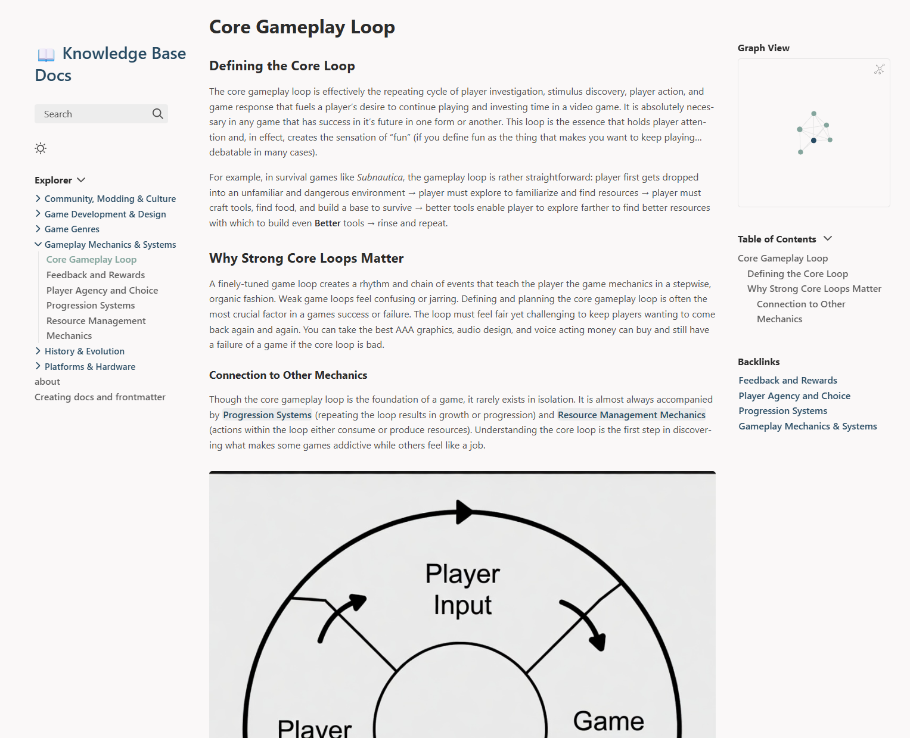

From the Trades to Tech & Game Dev
Hi, my name is Landon Forney. After spending 7 years in the trades as a licesnsed plumber, HVAC technician, and backflow tester, I began transitioning into the tech industry and currently work as a Financial Technical Support Specialist for a massive SaaS company based around building software for the trade industry. I am currently completing my second B.S. in Computing Applications at Texas Tech University while developing small indie games and sharpening my skills in cybersecurity and full-stack development.
See My WorkSkills & Interests
Technical Support
SaaS Financials, Salesforce, TalkDesk, QuickBooks, Intacct, Xero, and API integrations.
Game Development
Unity, C#, modular systems, particle effects, sound & audio design, OOP, ECS, 3D Modeling, and Game Design.
Cybersecurity
Network security, penetration testing, ethical hacking, vulnerability assessment, Network+ Certification, TryHackMe (100+ rooms completed).
Featured Projects

Asteroids Clone
A retro-style arcade game clone built in the CLI with Python and Pygame.
View Project
Video Game Knowledge Base
A comprehensive database of video game information and resources.
View Project
This Portfolio Site
Hand-coded responsive landing page for personal portfolio with smooth interactions.
View Project